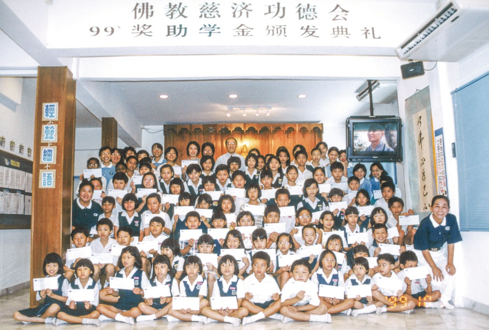
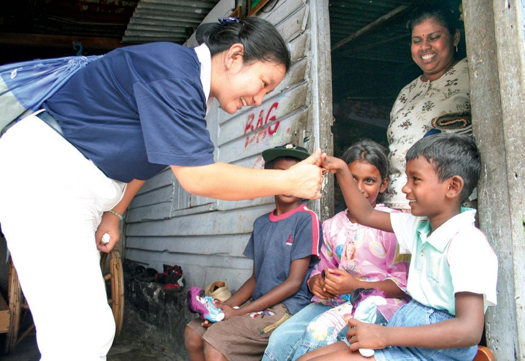
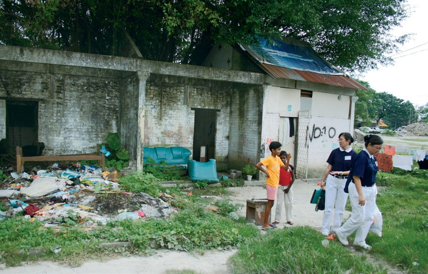
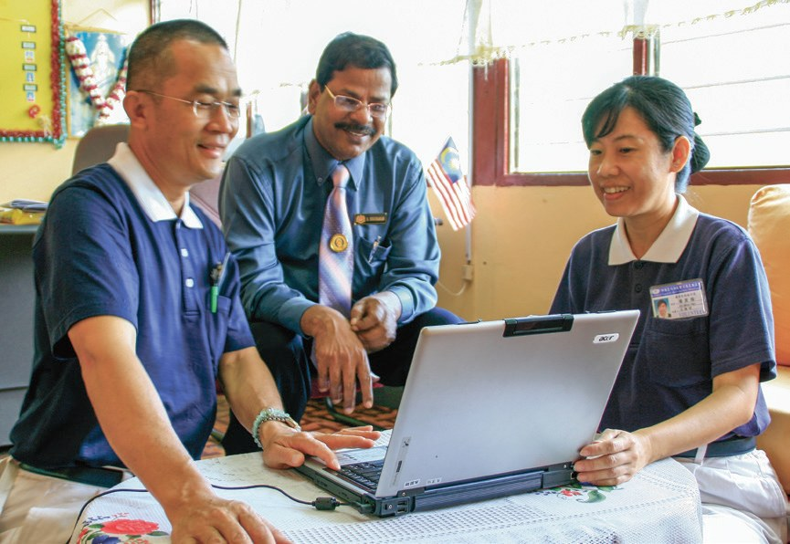

教育相伴
希望萌芽
讀書不用學費，為什麼還有孩子讀不起書？

先別急著下結論，讀完再說說你的想法～
這一篇講新芽助學金：一場金融風暴之後開始，二十多年來幫了十三萬多人次。
你會看到志工怎樣走進木屋區家訪，助學金又怎樣從「發現金」改成「看表現」。
下面是原書的節錄，紅色底線是我們替你標出的轉折點。
讀之前：你覺得助學金最該幫到的是什麼？
從二十三個學生開始
金融風暴那一年，慈濟開始頒發助學金。閱讀引導
中小學生免繳學費，但每學期仍有二、三百令吉的學雜費，以及校服、文具、交通費等開銷，亦為經濟拮据家庭的一大負擔。
可是雜費、校服、車費……
為了協助這些家庭，1997年12月17日，慈濟吉隆坡支會首辦清寒學生助學金頒發典禮，嘉惠共十名小學生以及十三名中學生

- 十三萬人次以上清寒學子受惠p.95
- 四千萬令吉以上總金額p.95
- 23名1997年第一次受惠的學生p.95

到十三萬人次！
有別於以往清寒助學金採用郵寄表格方式，慈濟從該年開始動員志工和教育團隊，主動走入社區拜訪各級學校，關懷需要幫助的學生和家庭。
猜一猜閱讀引導
志工主動到學校講解之後，申請人數比往年多了幾倍？
因申請的人數大幅增加，且分布在各區域，故志工平均每週得訪視十幾個家庭，但他們並不以為苦，開始推行「人人做慈善」口號
看表現的獎助學金
發現金出了問題，志工怎樣改？閱讀引導
經過多年來的運作經驗，志工察覺有部分學生家長在領取現金後，未必會全數用在受惠學生身上，甚至有家長在開學前就將助學金花光。

孩子還是沒書讀……
2013年雪隆分會及所屬據點學習臺灣本會的做法，將助學金轉型為獎助學金，設立孝悌獎、品德獎、精勤獎、學業進步獎及品學兼優獎
新芽小冊含有日常生活表現自我評量表，學生需每日填寫，父母及老師則依據學生每月的表現，在回饋欄位寫下鼓勵或建議的話語。

三個人一起寫一本小冊。
2015年，雪隆分會與馬來西亞大眾銀行合作，開發「慈濟現值卡」。……所有受惠學生可憑領取的現值卡，直接到全國任何一家大眾銀行兌換現金，讓整體作業更為簡捷安全。
找不到的那一戶
學校給的地址找不到，志工怎麼辦？閱讀引導
家訪時，志工得克服各種困難，諸如道路不通，須徒步前往；或居於非法地區而無明確地址，需要當地人帶路等等。

古慕達維莉一家居住在一間半磚半木的房屋，整個家只剩客廳尚有一處可以睡覺外，其餘的地方都佈滿泥濘、雜物和一堆堆發霉的衣物。

「我們不要求什麼，只希望有屋住、有飯吃、有工作，孩子有書讀就夠了。」
古慕達維莉的母親古芭瑪說道・p.100就夠了……
當下，王幼珍不但核准了兩個女兒的助學金申請，也另外為古芭瑪一家申請物資補助，以解決他們一家的困境。
部分學校設施簡陋，尤其是淡小，家長及教師協會人力單薄，學生家庭普遍貧窮，因此慈濟同時推展「幸福校園計劃」，改善教學環境並補助學生的交通、課輔、餐食等費用


連整間學校也一起顧？
醫人、醫心
頒發典禮上的濯足和竹筒，還有一位當上中醫師的受助學生。閱讀引導
新芽助學金於每年十一月初舉辦，典禮中除了有手語帶動、奉茶、孝親濯足等溫馨環節，也會播放慈善影片，讓與會者見苦知福。
「這是我們第二次舉辦竹筒回娘家的延伸活動，看到這一次回來的孩子們，每一個都會投竹筒，真的很感動。」
志工劉豐鎂表示・p.102也投竹筒幫別人！
來自吉隆坡的江可俐在就讀中學期間，連續五年獲得慈濟的助學金補助。她的父母都是殘障人士，需靠輪椅代步，以製藤為生，生活清苦。
但江可俐因為家境清寒，無法支付大學先修班一年馬幣七千令吉的學費，在苦惱是否外出打工延後就學時，突然想起每年補助自己助學金的慈濟基金會。
江可俐感恩慈濟的援助，表示無論如何一定要完成中醫學業，成為「醫人、醫心」的好醫師，才不會辜負大家的愛心。
原文・p.103江可俐在工作穩定之後，也會抽出假日的時間到吉隆坡義診中心輪值門診，回饋社會。

回來幫別人看病！
「馬來西亞慈濟人很用心耕耘福田，他們除了助學，也與孩子們互動，讓孩子知道『我窮，但是不苦，因為有人比我更窮、更苦』。」
上人讚歎・p.103停一停：誰讓你記住了？閱讀引導
選一位你印象最深的人。沒有標準答案。
有人在找不到路的地方找到一戶人家，有人長大後回來幫人。哪一位讓你最有感覺？

一起回頭看看吧～
回望
依本章原文整理，每一條都標了原書頁碼。閱讀引導
背後原因
為什麼要改成獎助學金

小川發錢不是最直接嗎？
- 發現金
1997年至2010年，助學金都以現金發放。p.97
- 錢被花光
有家長在開學前就將助學金花光。p.97
- 看表現
獎助學金加上新芽小冊，老師、家長、學生三方配合。p.97–98
後續發展
新芽助學金一路走來

小禾二十多年，加了哪些東西？
- 1997
因應金融風暴，首辦助學金。p.95、p.105
- 2001
開放照顧戶子女申請。p.95
- 2008
志工主動到學校、家訪。p.97
- 2011
推動幸福校園計劃。p.105
- 2013
轉型為獎助學金，用新芽小冊。p.97–98
- 2014
增設教育助養計劃。p.98
- 2020
疫情遠距教學，發放電腦。p.105
一份助學金
幫到了誰
小川一筆錢，可以照顧到多少人？
- 第一圈學生
古慕達維莉兩姊妹，助學金核准了。p.100
- 第二圈家庭
古芭瑪一家，另外申請物資補助。p.100
- 第三圈學校
幸福校園計劃，補助交通、課輔、餐食。p.101
- 第四圈社會
江可俐當上中醫師，假日回義診中心輪值。p.103
以上只整理本章寫到的事；書裡沒寫到的，我們不替它下結論。
回頭看讀前的選擇閱讀引導
新芽小冊要學生每天自評、父母和老師寫回饋（p.98）；典禮上還有孝親濯足和竹筒（p.102）；上人說要讓孩子知道「我窮，但是不苦」（p.103）。讀完之後，你覺得助學金幫到的只是學費嗎？
是怎樣做到的？
只有你自己看得到喔！
準備好了就一起出發～